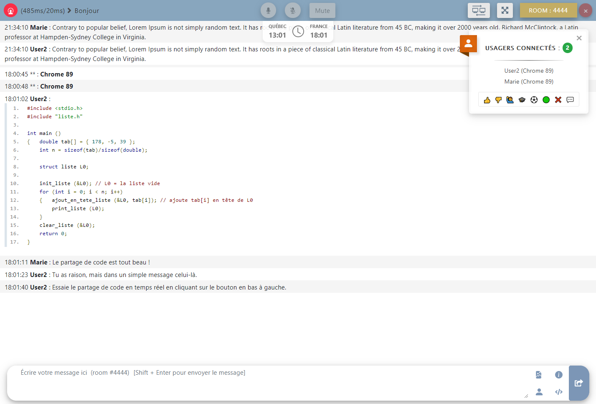
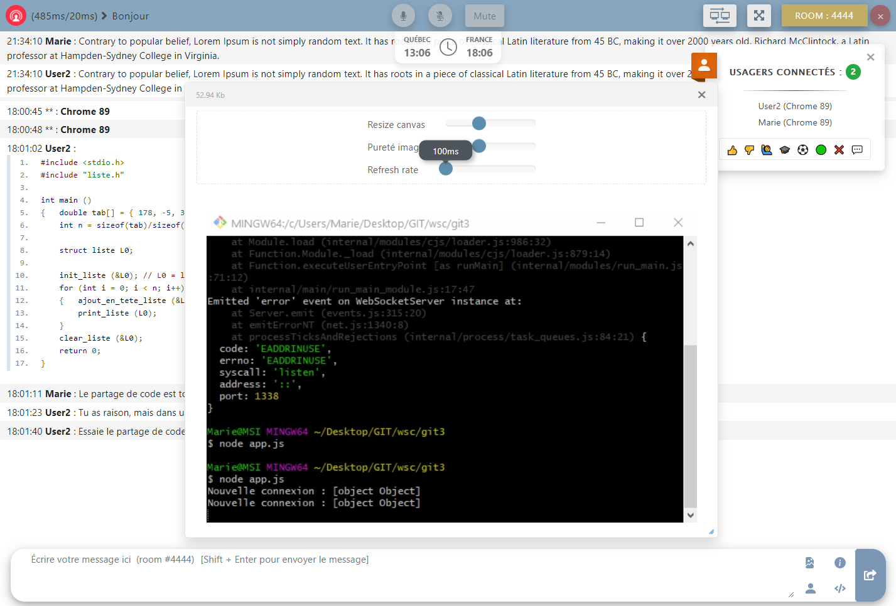
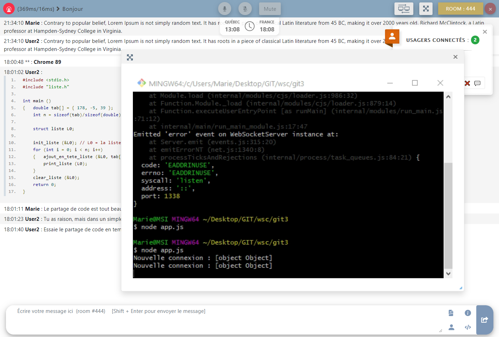
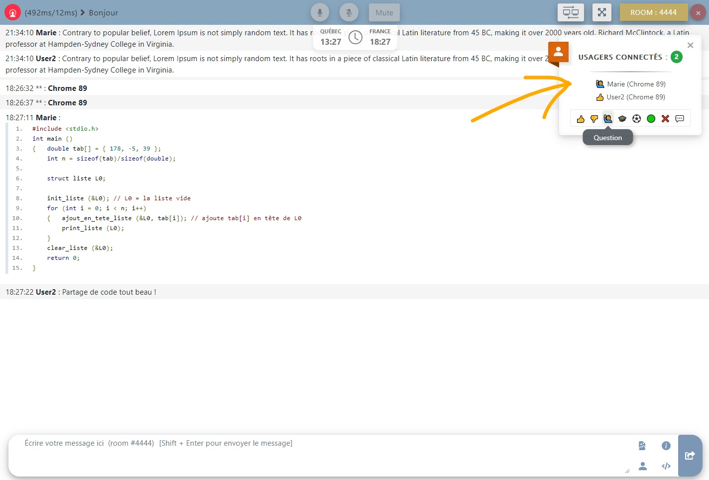
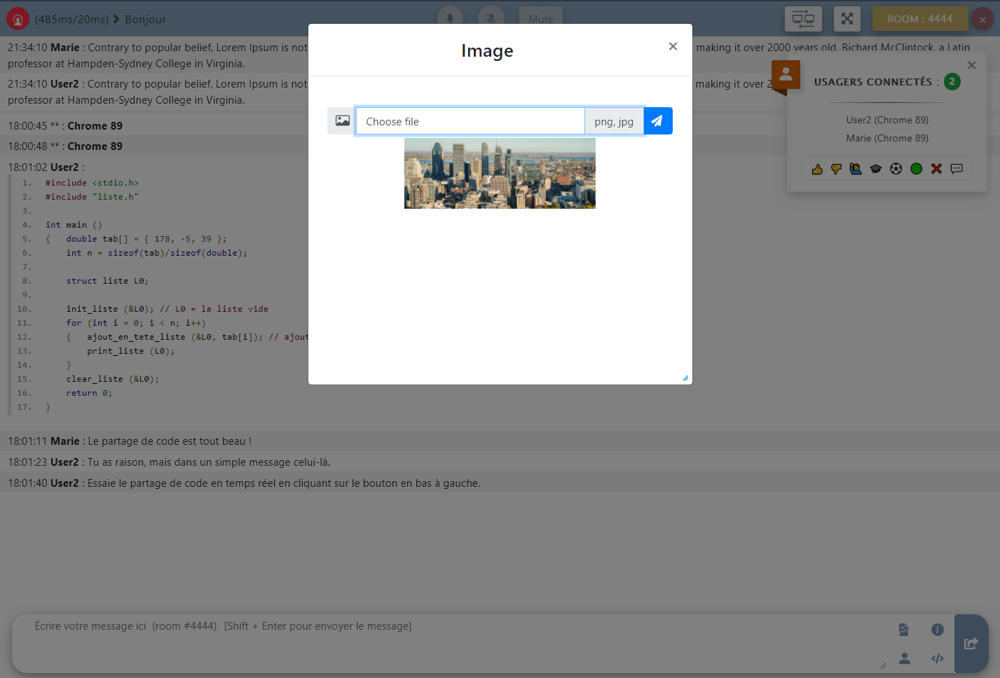
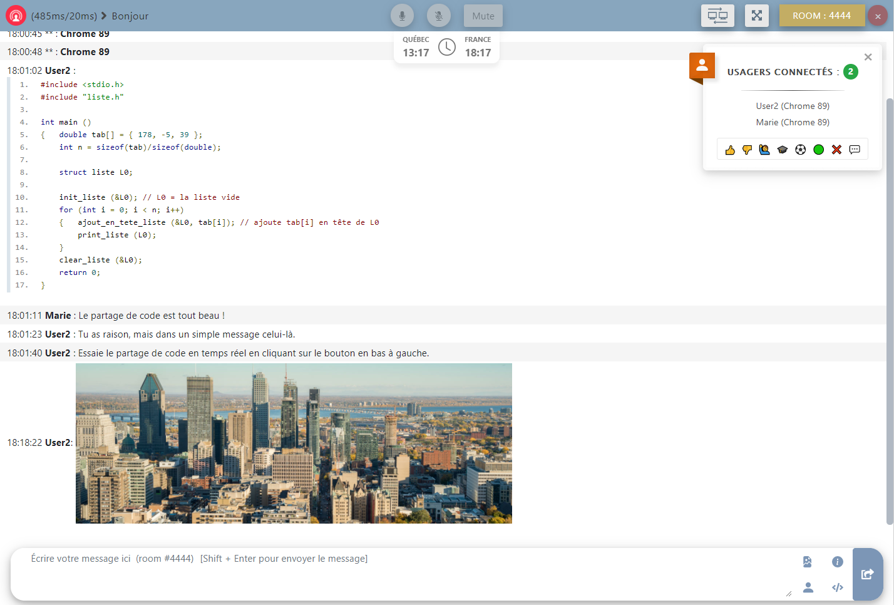

<div class="modal-dialog modal-lg modal-dialog-centered" role="document">
  <div class="modal-content">
    <div class="modal-header text-center pb-0">
      <h1 class="p-2 m-auto">WSC - Websocket Secure Chat</h1>
      <button type="button" class="btn-close" data-bs-dismiss="modal" aria-label="Close"></button>
    </div>
    <div class="modal-body pt-2">
      <p class="text-uppercase text-center date mb-2"><i class="fas fa-calendar-alt"></i> Juillet-Octobre 2020</p>
      <p class="text-center git"><i class="fab fa-github"></i> <a href="https://www.github.com/guyfrancoeur/wsc">github.com/guyfrancoeur/wsc</a></p>  

      <div class="accordion accordion-flush" id="accordion_wsc">
        <div class="accordion-item">
          <h2 class="accordion-header" id="acc_wsc_1">
            <button class="accordion-button collapsed" type="button" data-bs-toggle="collapse" data-bs-target="#collapse_wsc_1" aria-expanded="false" aria-controls="collapse_wsc_1">
              Description
            </button>
          </h2>
          <div id="collapse_wsc_1" class="accordion-collapse collapse" aria-labelledby="acc_wsc_1" data-bs-parent="#accordion_wsc">
            <div class="accordion-body">
              <div class="text-center">
                <i class="fab fa-node icon_outils" title="NodeJS"></i> 
                <i class="fab fa-html5 icon_outils" title="HTML"></i>
                <i class="fab fa-css3-alt icon_outils" title="CSS"></i>
                <i class="fab fa-bootstrap icon_outils" title="Bootstrap"></i>
                <i class="fab fa-js-square icon_outils" title="Javascript"></i>
              </div>
              <p class="text-center" style="color: #846828;">
                <span class="text-uppercase" style="letter-spacing: 1px;">Type de réalisation </span>: Projet personnel
              </p>
              <p class="mb-0">
                C'est un chat rapide, fluide, sécuritaire et pratique, qui regroupe les fonctionnalités essentielles pour discuter à distance 
                ou partager du contenu.</p>
              <p class="mb-0">Nous avons réalisé ce projet à deux, à l'aide de NodeJS, HTML, Javascript, JQuery, HTML, et CSS.</p>
              <p><a href="https://developer.mozilla.org/fr/docs/Web/API/WebSockets_API">L'API Webocket</a> 
                a également été utilisée pour réaliser le dialogue avec le serveur. Le partage d'écran, l'audio, et le chat ont chacun un port de serveur
                différent pour éviter les encombrements.
              </p>
            </div>
          </div>
        </div>
        <div class="accordion-item">
          <h2 class="accordion-header" id="acc_wsc_2">
            <button class="accordion-button collapsed" type="button" data-bs-toggle="collapse" data-bs-target="#collapse_wsc_2" aria-expanded="false" aria-controls="collapse_wsc_2">
              Fonctionnalités
            </button>
          </h2>
          <div id="collapse_wsc_2" class="accordion-collapse collapse" aria-labelledby="acc_wsc_2" data-bs-parent="#accordion_wsc">
            <div class="accordion-body">
              <ul>
                <li>Partage d'écran</li>
                <li>Envoi d'images : sélection de l'image directement dans le presse-papiers ou bien en faisant glisser l'image (drag-and-drop)</li>
                <li>Envoi de code formatté</li>
                <li>Partage de code en temps réel</li>
                <li>Liste des usagers connectés</li>
                <li>Indication qu'un usager est en train d'écrire</li>
                <li>Réactions (main levée par exemple)</li>
                <li>Notification sonore et visuelle (couleur du favicon) si la page est hors focus</li>
                <li>Plusieurs rooms/salles de discussion verrouillées par un mot de passe</li>
                <li>Deux horloges : une à l'heure québecoise et une autre à l'heure française</li>
                <li>Audio (fonctionnait aurparavant, mais à réparer)</li>
              </ul>
            </div>
          </div>
        </div>
        <div class="accordion-item">
          <h2 class="accordion-header" id="accordion_wsc_3">
            <button class="accordion-button collapsed" type="button" data-bs-toggle="collapse" data-bs-target="#collapse_wsc_3" aria-expanded="false" aria-controls="collapse_wsc_3">
              Ce que j'en ai pensé
            </button>
          </h2>
          <div id="collapse_wsc_3" class="accordion-collapse collapse" aria-labelledby="accordion_wsc_3" data-bs-parent="#accordion_wsc">
            <div class="accordion-body">
              <p>
                J'ai aidé à la réalisation de ce projet pendant plusieurs mois. C'est un travail d'équipe qui a été efficace et qui est régulièrement
                mis à jour. Nous avons réalisé chacune des idées que nous avons imaginé. J'ai appris énormément de choses.
              </p>
              <p>
                La partie qui a été la plus longue a été l'ajout de l'audio. J'ai cherché des solutions pendant des jours pour essayer de créer
                un dialogue audio qui fonctionne avec le moins de librairies externes. Aucune solution n'était déjà disponible sur Internet. 
                Mes tests ont d'abord débuté avec ce projet ci  : <a style="font-size: 13px;" href="https://github.com/guyfrancoeur/wsa">WSA</a>.
                <br>La communication audio marchait parfaitement aupraravant mais des bugs sont apparus, et nous allons bientôt corriger ceci !
              </p>
              <p>
                L'ami avec qui j'ai réalisé ce projet est québecois, et malgré le décallage horaire, l'organisation (et la communication 😁) a été très facile.
              </p>
              <p>
                Je suis heureuse et fière d'avoir pu réaliser une application aussi complète
                que celle-ci, qui regroupe un grand nombre de fonctionnalités qui marchent à merveille ! C'est l'un de mes meilleurs projets ! 😊
              </p>
            </div>
          </div>
        </div>
      </div>
      
      <br>
      <div id="carousel_wsc" class="carousel slide carousel-dark" data-bs-ride="carousel">
        <div class="carousel-indicators">
          <button type="button" data-bs-target="#carousel_wsc" data-bs-slide-to="0" class="active" aria-current="true" aria-label="Slide 1"></button>
          <button type="button" data-bs-target="#carousel_wsc" data-bs-slide-to="1" aria-label="Slide 2"></button>
          <button type="button" data-bs-target="#carousel_wsc" data-bs-slide-to="2" aria-label="Slide 3"></button>
          <button type="button" data-bs-target="#carousel_wsc" data-bs-slide-to="3" aria-label="Slide 4"></button>
          <button type="button" data-bs-target="#carousel_wsc" data-bs-slide-to="4" aria-label="Slide 5"></button>
          <button type="button" data-bs-target="#carousel_wsc" data-bs-slide-to="5" aria-label="Slide 6"></button>
          <button type="button" data-bs-target="#carousel_wsc" data-bs-slide-to="6" aria-label="Slide 7"></button>
          <button type="button" data-bs-target="#carousel_wsc" data-bs-slide-to="7" aria-label="Slide 8"></button>
        </div>
        <div class="carousel-inner">
          <div class="carousel-item active">
            
            <div class="carousel-caption d-none d-md-block">
              <h5>Page de connexion</h5>
            </div>
          </div>
          <div class="carousel-item">
            
            <div class="carousel-caption d-none d-md-block">
              <h5>Page principale</h5>
            </div>
          </div>
          <div class="carousel-item">
            
            <div class="carousel-caption d-none d-md-block">
              <h5 class="mb-0">Partage d'écran (celui qui partage)</h5>
            </div>
          </div>
          <div class="carousel-item">
            
            <div class="carousel-caption d-none d-md-block">
              <h5>Partage d'écran (celui qui reçoit)</h5>
            </div>
          </div>
          <div class="carousel-item">
            
            <div class="carousel-caption d-none d-md-block">
              <h5>Réactions avec icons</h5>
            </div>
          </div>
          <div class="carousel-item">
            
            <div class="carousel-caption d-none d-md-block">
              <h5>Sélection d'une image (avec prévisualisation)</h5>
            </div>
          </div>
          <div class="carousel-item">
            
            <div class="carousel-caption d-none d-md-block">
              <h5 class="mb-0">Image envoyée</h5>
            </div>
          </div>
        </div>

        
        <button class="carousel-control-prev" type="button" data-bs-target="#carousel_wsc"  data-bs-slide="prev">
          <span class="carousel-control-prev-icon" aria-hidden="true"></span>
          <span class="visually-hidden">Previous</span>
        </button>
        <button class="carousel-control-next" type="button" data-bs-target="#carousel_wsc"  data-bs-slide="next">
          <span class="carousel-control-next-icon" aria-hidden="true"></span>
          <span class="visually-hidden">Next</span>
        </button>
      </div>
    </div>
  </div>
</div>